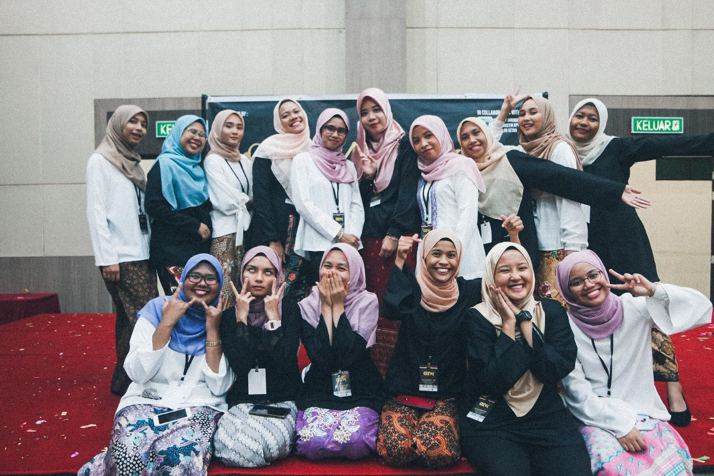
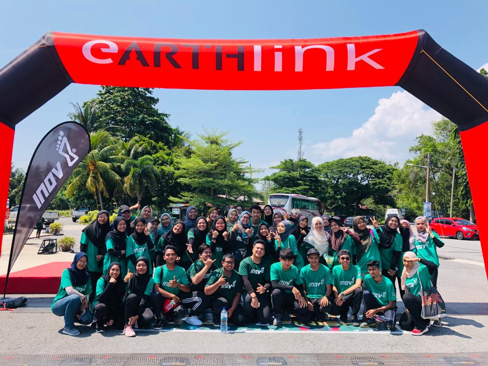
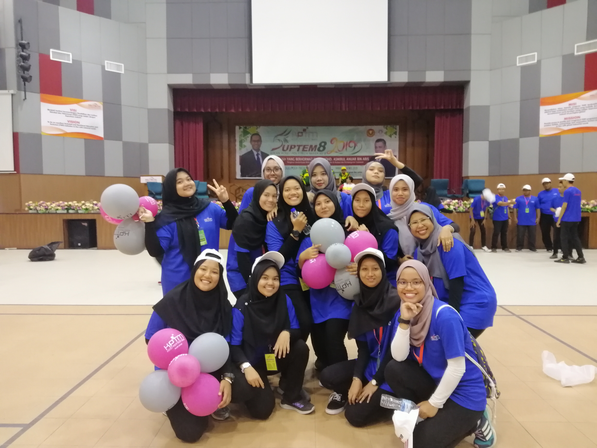
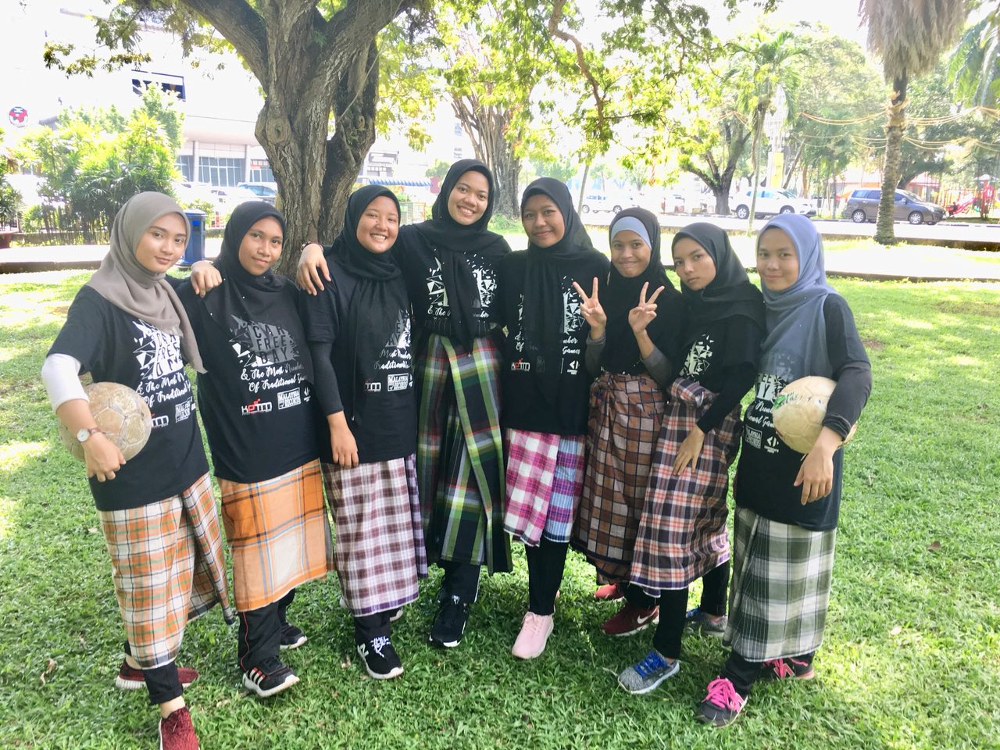

Sometimes the reward is experiences
 OM Alumnight 2019 The Grand Reunion Dinner OM Alumnight was a part of our Organizing Event's subject which we need to held an event for the assessment. My classmates and I decided to held a dinner to gather all of our seniors and lectures since we are the last batch of Diploma in Office Management & Technology in collaboration with UiTM. There's a lot of things need to be taken care of such as sponsorship, the venue of our dinner and the list go on. Fortunately, we are able to finish it with a good job although there were some technical mistake. Overall, I am so grateful for this experience and for the best teammates that I have ever had. From this experience, it thought me not to criticize other's event since it is not easy to held an event. |
 Jerai Geopark Inov Trail Run 2019 Jerai Geopark Inov Trail Run were held on 2 March 2019 at Rekreasi Titi Hayun. It was held with a collaboration of Menteri Besar Kedah Incorporated and was launched by YAB Dato' Seri Haji Mukhriz Tun Mahathir, Menteri Besar Kedah Darul Aman. Menteri Besar Kedah Incorporated asked a total of 20 students to be the volunteers for the event. They provided two homestay for us because we needed to wake up early in the morning to stand by at the check point. We were asked to wait at the check point to give the participants mineral water, 100 plus or ice cubes. There were 400 participants that joined this event and there were also participants from overseas. It was one of enjoyable experience because the participants were so friendly and we were able to have some conversation with them. There were some footages of this event: JERAI GEOPARK INOV8 TRAIL RUN 2019 DISERTAI 400 PESERTA. Jerai Geopark Inov8 Trail Run 2019 |
 Kejohanan Sukan Kolej Poly-Tech Mara (SUPTEM) The 8th SUPTEM were held at Politeknik Sultan ABdul Halim Muad'zam Shah (POLIMAS) Kedah which were participated by 360 athletes of 8 KPTM's Campus in Malaysia. I was there because I was one of the SUPTEM's volunteer. Me and my friend, Hajar were in charged for badminton line judge hand. The task was so difficult as we needed to stay focus in the game. Me and Hajar were struggling because we were not used to be a badminton line judge hand. For a game of badminton, they needed 2 badminton line jugdes hand so there were 5 pairs of it. Unfortunately, me and Hajar always got the most intense games and it made us scared if we gave the wrong signal. The first one or two games, we made a lot of mistakes and were yelled by the jugdes. Thankfully, during the final game, we managed to give the right signal. It was a memorable experience for me. You can read more about The 8th SUPTEM in this article. |
 The Most Numbered of Traditional Games The Most Numbered of Traditional Games were organized by my seniors for their Organizing Event's subject. This program also got an award from The Malaysia Book of Records for organizing the program. Participants were consist of students and lecturers from KPTM Alor Setar and students from a few kindergartens in Alor Setar. There were a total of 52 traditional games which are Congkak, Batu Seremban, Galah Panjang, Lari dalam Guni, Tarik Tali and many more. Me and my classmates decided to join Futsal Kain Pelikat which is one of the games that being held. We enjoyed and laughed a lot while playing this games because none of us know the strategies to make it goal so we just kick the ball until it was a goal. There was no winner or loser in this program. Everyone was enjoying their time. Me and my classmates also had made a new memories. |